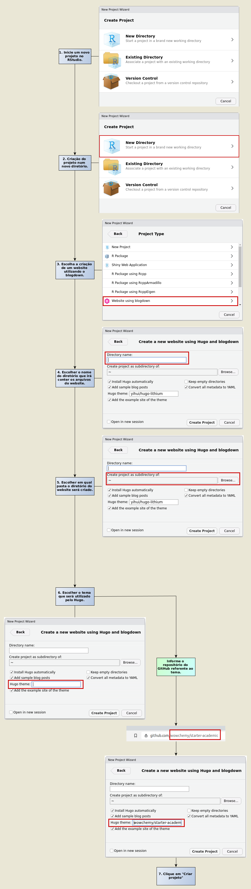

Instalando o Blogdown e o tema Academic.

O que é o Blogdown e o Hugo?
O pacote blogdown proporciona ao usuário escrever posts de blog e páginas da web no R Markdown. Ele suporta os geradores de sites estáticos Hugo, Jekyll e Hexo, sendo que o gerador Hugo é o utilizado pelo ECONOSTATBLOG.
O site é gerado a partir de documentos R Markdown, ao caso da elaboração pelo Rstudio, o que traz ao usuário uma grande vantagem para o uso da programação em R e tem como benefício os documentos dinâmicos, fazendo com que os resultados de suas análises - como tabelas, gráficos, valores embutidos. podem ser calculados e renderizados dinâmicamente a partir do código R. Com o Markdown tem-se a possibilidade de publicar livros em formatos de PDF e Epub e escrever documentos técnicos facilmente, visto que o blogdown herda o formato de saída HTML do Xie (2017). O blogdown é para sites de uso geral, e não apenas para blogs.
Já o Hugo é um gerador de sites estáticos no qual baseia-se o pacote Blogdown. Via de regra, um site estático consiste basicamente de uma coleção de arquivos HTML armazenados num servidor que irá prover os usuários da página com os conteúdos gerados previamente, tornando o acesso mais rápido quando comparado aos sites dinâmicos.
O Hugo possui algumas alternativas, como os geradores Jekyll e Hexo, mas destaca-se por sua facilidade de instalação, pouca necessidade de gerenciamento de dependências e agilidade da renderização das páginas ou posts.
Operacionalmente, o Hugo possui sua própria estrutura de arquivos, cada qual com funções e interações próprias dentro de um website. Via de regra, constam num projeto os seguintes diretórios:
config.tomlcontent/static/themes/layouts/
Temas Hugo
Um tema do Hugo trata-se num modelo de arquivos e funções que irão definir várias características do website, como aparência, cores, estrutura das páginas e organização dos menus de navegação. Existem diversos temas, cada qual com uma função específica, e, no caso no ECONOSTATBLOG, foi utilizado o tema Academic.
Instalando o Blogdown e o HUGO.
Assumindo-se de que tenha instalado R(Team 2020) e a IDE RStudio. É necessário instalar o pacote blogdown no R. Ele está disponível para ser instalado no CRAN (Comprehensive R Archive Network) ou pelo GitHub e pode ser instalado pelo seguinte modo:
#instalando pelo CRAN
install.packages('blogdown')
#Ou, instalar pelo GitHub
if (!require("remotes")){
install.packages(""remotes"")
}
remotes::install_github('rstudio/blogdown')O blogdown é baseado no gerador de sites estáticos Hugo, portanto também é necessário instalá-lo. A função blogdown para baixar e instalar automaticamente este gerador pode ser expressa por:
blogdown::install_hugo()Por padrão, ele irá instalar a última versão do Hugo, mas é possível escolher a versão específica de acordo com a preferência. Para atualizar ou reinstalar o Hugo, é possível chamar a função blogdown::install_hugo() novamente. Para verificar a versão atual no sistema, basta chamar a função blogdown::hugo_version().
- Para mais informações de versões disponíveis e recentes do Hugo: https://github.com/gohugoio/hugo/releases.
Instalando o tema Academic.
Posto que o usuário já tenha instalado RStudio, juntamente com o pacote Blogdown e o gerador de sites HUGO, a criação de um site que utiliza como template o tema Academic é simples, semelhante à criação de um projeto.
- Inicie um novo projeto no RStudio.
- Escolha se o projeto irá ser armazenado num diretório já existente ou num novo diretório. Neste exemplo, optou-se por utilizar um novo diretório.
- Escolha a opção de criar um website utilizando o blogdown.
- Em seguida, deve-se escolher o nome do diretório que irá conter os arquivos website.
- Na mesma janela, também deve-se escolher em qual pasta o diretório do website será criado.
- O próximo passo é escolher o tema que será utilizado pelo Hugo. Neste exemplo será utilizado o tema Academic, o mesmo utilizado no ECONOSTATBLOG.
- O RStudio, via de regra, irá se encarregar de baixar os arquivos necessários para a criação do site, bastando somente que o usuário informe o repositório do GitHub referente ao tema.
- Para finalizar a criação do website, clique em “Criar projeto”. O RStudio irá realizar o download dos arquivos do tema e criar o projeto.

Importante citar que o tutorial acima foi testado em 26/01/2021. O tema Academic está em constante evolução, sendo possível que o método de instalação se altere. É importante que o usuário acompanhe o site do autor para eventuais alterações.
As informações presentes neste capítulo encontram-se em Xie (2017).
Team, R Core. 2020. “R: A Language and Environment for Statistical Computing.”
Xie, Alison Presmanes & Thomas, Yihui & Hill. 2017. Blogdown: Creating Websites with R Markdown. CRC Press.
ECONOSTAT
Grupo de Extensão em Estatística Econômica
Este site é parte dos resultados do projeto de pesquisa ECONOSTAT - Grupo de Extensão em Estatística Econômica.